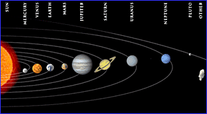

| Problem D: | How Far? |
|
Time Limit: 4 seconds Memory Limit: 32 MB |
|
|  | As you probably know, the earth moves round the sun, and the moon moves round the earth. Both the earth and the moon follow elliptical paths. But for this problem, we will consider their paths to be circular. So the earth moves round the sun in a circular path with the sun in the center, and likewise the moon moves round the earth in a circular path with the earth in the center. This same kind of planetary system can be observed elsewhere in the galaxy. So, for a general case, let there are n such bodies b1, b2, b3, ... bn, where b1 moves round the sun, which is stationary, from a distance of r1. Body b2 moves round b1 from a distance of r2, and so on. Body bi completes a cycle in nonzero-time ti. Given the r’s and the t’s, you have to find out the distances d’s of the bodies from the sun at a given time T. At T = 0, all the bodies lie in their farthest positions from the sun. |
Input consists of multiple test cases. Each case starts with n and T in a line. The following n lines each contains first ri and then ti for i = 1, 2, ... n. Input is terminated by EOF. All the inputs are positive integers. There won’t be more than 50 bodies in a single solar system.
For each case, there should a new line. Print all the d’s in that line separated by spaces. Each d should have 4-digits after the decimal point.
3 5 20 5 30 5 40 5
20.0000 50.0000 90.0000
Problem setter: Sadrul Habib Chowdhury (Adil)
Solution author: Monirul Hasan (Tomal)
Man has his will, - but woman has her way.
-- Oliver Wendell Holmes